From a functional wallet to an experience that gives confidence
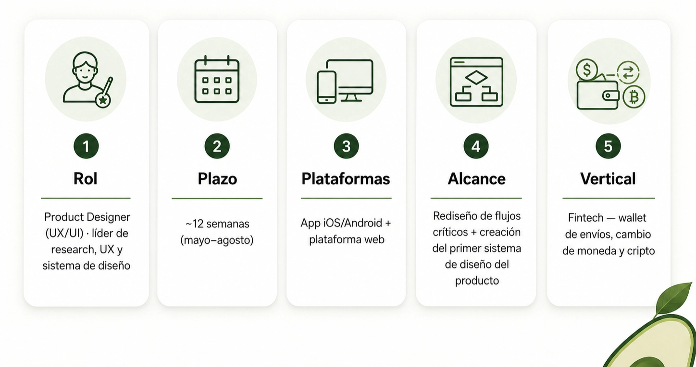
TL and DR
Aguacate Wallet is a finite platform that gathers money sending, currency exchange and bad operations in a single app. An internal sign against local and international platforms shown that Aguacate's experience was 90% distance from competition and coherence. The problem was not visual: it was structural. The app solved transactions but did not solve the user's uncertainty.
I led the re-design of 6 critical flows (registration, verification, sending of remittances, currency exchange, crypt and beneficiaries) and the creation of the first product design system. The actual client testing validated most of the hypotheses and revealed a finding that reorganized the whole architecture: users do not use dashboard as information screen - they use it as the first place to operate.
Avocado didn't have to look better. I needed to feel more clear.
1. The real problem
The money's already moved fast. Trust, no.
A walk today can concentrate transfers, conversions, payments and critical operations at a single interface. But while money became more digital, it also became more fragmented: banks, exchanges, local currencies, dollars, crypt and remittances coexist with different rules and languages.
For financial products, this fragmentation does not lead to delays. Genera doubt.
The real challenge is no longer to allow a transaction to occur. It's to get users to understand, at every step, what they're doing, how much they're moving, how much it costs them and what's gonna happen after that.
Trust doesn't appear when the interface looks modern. It appears as soon as the user feels control.
Avocado Wallet in this context
Aguacate propose to gather three worlds into a single experience: sending money, currency exchange and bad operations. That's his best and, simultaneously, his greatest design challenge:
The more capabilities a financial platform concentrates, the more clear its experience should be.
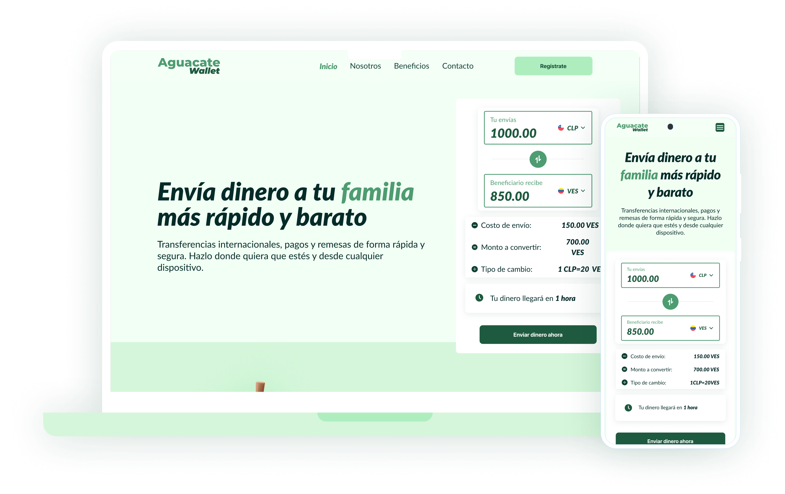
The diagnosis: 90% distance
A benchmark against local and international platforms (Chile) (Wise, Binance, regional challenges) measured four criteria: ease of use, complete time, functionality and accessibility.
The finding was strong:
The usability and experience of Aguacate was far from 90% with respect to competition at the level of flows and internal coherence.
That didn't mean that the app needed a cape of paint. It meant that the product solved transactions but did not solve uncertainty. Flows did not guide users at times where accuracy, security and confidence are critical.
The challenges of design
3 levels of intervention:
- Simplify critical flows - registration, monitoring, dispatch, currency exchange, crypt and beneficiaries.
- Ordering visual and functional architecture - Foundations, components and consistent patterns between app and web.
- Translate financial complexity into understandable decisions - that users feel that they are operating within an accompanying experience, not within a technical system.
2. Research: how to build clear competition
Guide question
What makes a financial experience feel easy, secure and reliable?
The Benchmark did not seek to copies interfaces. I was trying to understand patterns that allow a financial operation to be perceived as simple.
Local, regional and international Benchmark
I have compared local platforms to understand basic expectations of the Chilean market and regional and international platforms to recognize more mature standards: guided experiences, visible critical information and less uncertainty before each decision.
Local platforms:
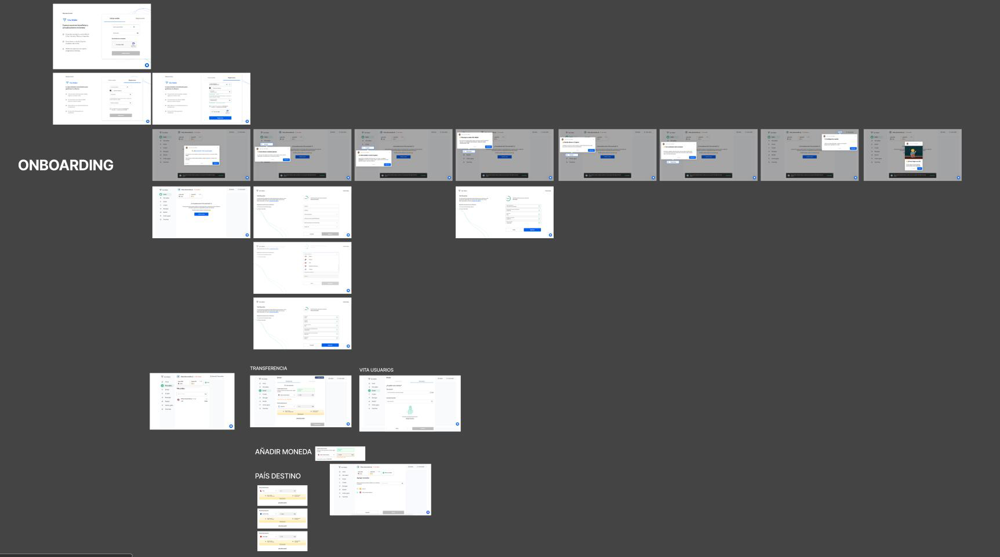
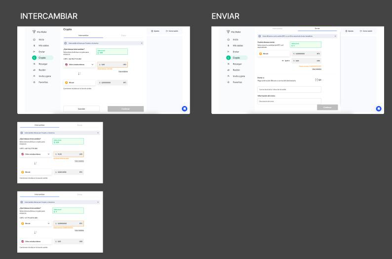
Regional / international platforms
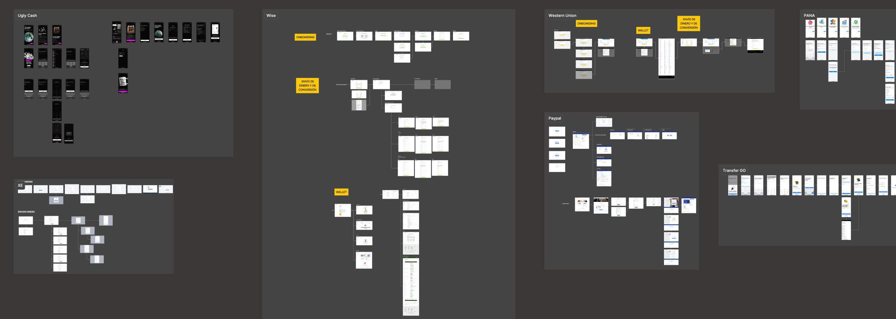
Current Avocado Wallet Flow Audit
Also, I checked the Current flows of Aguacate Wallet To check what competition was more clear about the actual user's experience on the platform.
I focused not only on remote screens but also on the main product tours: onboarding, monitoring, sending money, currency exchange, crypt, beneficiaries, dashboard, support, transactions and recharges. I sought to identify where experience lost coherence, increased cognitive burden or could affect user confidence.
That audit allowed me to recognize that Aguacate had a solid functional proposal but did not always communicate it simply. Some flows needed more guidance, better visual hierarchy, more visibility of critical information and more consistent structure.
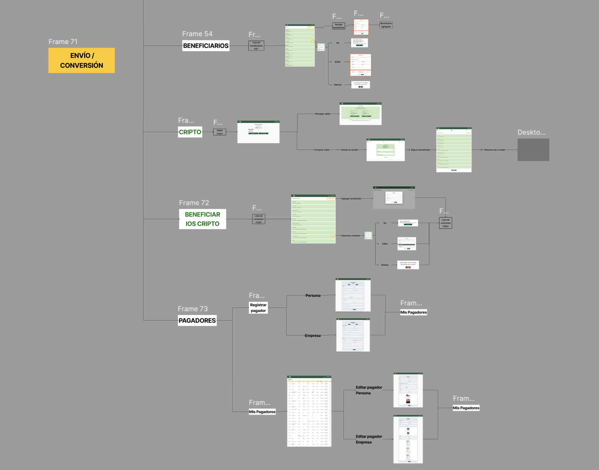
patterns that appeared in best experiences
| Master | Why it works |
| Main visible CTA | User starts action without ambiguity |
| Modular forms | Decreased cognitive load |
| Stepper of progress | The user knows where and how far to go |
| contextual tools | They solve doubts without getting the user out of the flow |
| Commission and visible fee | They reduce uncertainty before confirming |
| Estimated time | The feeling of control increases |
| Clear labels in buttons | Avoid misinterpretation |
What these patterns had in common was not aesthetic. He was advance of doubt.
5 Insights That Structured Redesign
Insight 1 - The competition best guided the user.The best-evaluated platforms used modular forms, steppers, microcopy and Tocs to be identified. The user knew where she was and what was missing. Implication: simplify registration, monitoring and sending with visible progress.
Insight 2 - Trust depended on visible information.The mature platforms shown commission, exchange rate, final amount, estimated time and support before To ask for confirmation. Avocado did show them later or did not show them. Implication: anticipate anything that users need to know before they move money.
Insight 3 - Critical should have been put to feel and understand.The best platforms had been critical as an action (change, get, send), but as an isolated module with technical jargon. Implication: to be integrated with family tasks.
Insight 4 - Consistency was a condition for climbing.Without common foundations, every flow felt as a different experience. In financial products, inconsistency affects confidence and not just aesthetics. Implication: create a design system with tokens, components and accessibility patterns.
Insight 5 - Beneficiaries was a sensitive flow of safety.The recipient is the destination of money. If the user doesn't understand whom to send or how to validate information, the perception of risk increases. Implication: Redesign beneficiaries with progressive validation and prior confirmation.
From Insights to Design Principles
The findings were translated into five principles that guided the whole UX phase:
- To reduce cognitive burden - every flow had to demand less mental care.
- Making progress visible - The user had to know where she was and what she was following.
- Produce critical information - visible commissions, times, fees and recipients before confirming them.
- Design with consistency - app and web should feel as the same system.
- Translate to daily language - from actions, not from technical concepts.
3. UX: To convert hypotheses into a testable experience
Mapeno: where did clarity break?
Before prototipar, I mapped critical flows to identify where the experience generated more friction:
| Moment | User action | Filling detected | UX risk |
| Registration | Create Account | Extensive and unguided flow | I leave early |
| Verification | Validate Identity | Unintended process with no estimated time | Unconfidence |
| Shipment | Retiring and sending | Critical information hidden | Doubt at confirmation |
| Critical | Find The Function | Low visibility | Low adoption |
| Beneficiaries | Add Destination | Insufficient validation | Retirement risk |
Design hypotheses
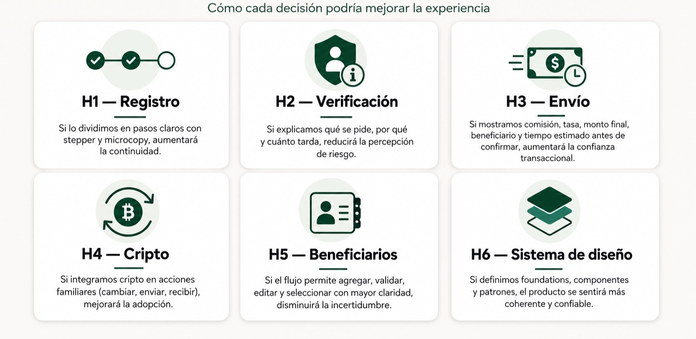
Protocype low-fi: Validate logic rather than aesthetics
The next step with the established hypotheses was to build a low-fidelity prototype aimed at validating the clarity of the main flows. The aim was not to evaluate an completed visual proposal but to check whether the structure of the experience helped the user to advance with less doubt.
The prototype focused on two critical moments: registration and Retirement. At the registration flow, screens were designed to login, choose account type, create a personal account, validate mail, enter personal data, attach documents, register residence and complete the verification process. A three-step sending sequence was worked on at the sending flow: Change, Contact and Validation.
Flow 1 - RegistrationType of account (personal / company) → credentials → validation by mail → personal data → documents → residence → final screen with estimated time of verification.
Flow 2 - RemesaQuotation (coins + fee + means of payment) → recipient → summary (all critical data) → success.
The prototype's question was one:
Do new experience help users understand what to do, what information to deliver and how to advance?
4. User Test: what validated and what changed the design
Preparation of interviews and testing
The methodology was put forward as a Test of experience. The aim was to understand if the new proposal was clear and relevant to the user, especially in scenarios related to sending money.
To do so, we worked with AguacateWallet customers That they had made remittances in recent months. The sample was composed by 3 men and women from 25 to 50, an important profile because I had previous experience with the problem that the platform was trying to solve.
The test was structured into four activities. Each simulated a real task within the product:
- Create a personal account after receiving a recommendation to use AguacateWallet.
- To login and find the sending option.
- To quote a shipment of Chilean pesos to bolivares to a Banesco account, paid with Bank Transfer.
- Continue the flow by selecting an existing recipient.
The focus was to observe the experience from action: not only to ask what users felt but to see what they did, where they doubted, what they felt and what they did not find.
| Element | Definition |
| Method | Test of experience (actual tasks) |
| Participants | 3 real customers about Aguacate Wallet, 25-50 years old |
| Profile | Persons who have made remittances in recent months |
| Tasks | Creating account Find consignment To quote sending CLP → VES to Banesco · Select Beneficiaries |
What worked
) The record was understood without friction.The users understand the difference between personal and company account, complete credentials intuitively and accept T & C and email validation without a doubt. It worked because every screen had an obvious goal.
The verification stopped generating rejection.When the system explained what she asked and why and how much she had to drink (30 minutes - 2 hours, notify by mail), users have accepted it as a necessary step, and as an obstacle.
) The contribution was clear.Flags, coins, amounts, banks, means of payment and estimated time gave sufficient context. The operation was first.
) The report worked as a monitoring point.The previous review screen was interpreted as what it is: trust checklist - the moment that the user decides if his or her confidence is high enough to confirm.
What did NOT work (and changed the design)
Critical Finding: The sending option was not found.
The three users have been looking for a collection first at dashboardThey did not find her, they confused other options, and only after they put her on the cheeseburger menu.
The problem was that they didn't know how to put up a consignment. It was that the system didn't show them where to start.
That observation changed the logic of the whole product architecture: users do not use dashboard as an information screen - they use it as a starting point to operate. That insight isn't at previous research. It came up only after users acted.
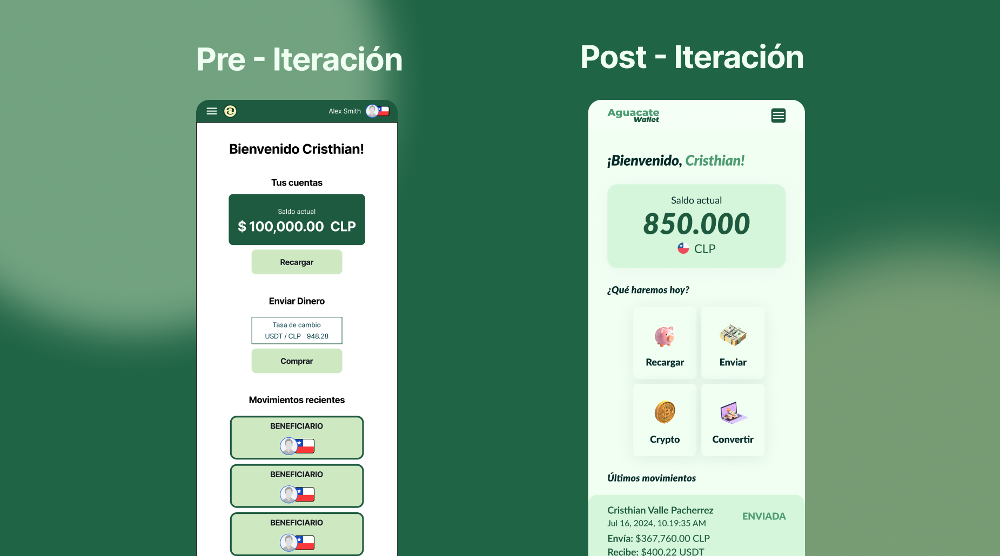
) The recipient's cards did not give sufficient context.The users understand the categories (recurring / all contacts) but the associated bench-free card gave rise to doubts about select them. That's exactly what increases the perception of risk in a financial transaction.
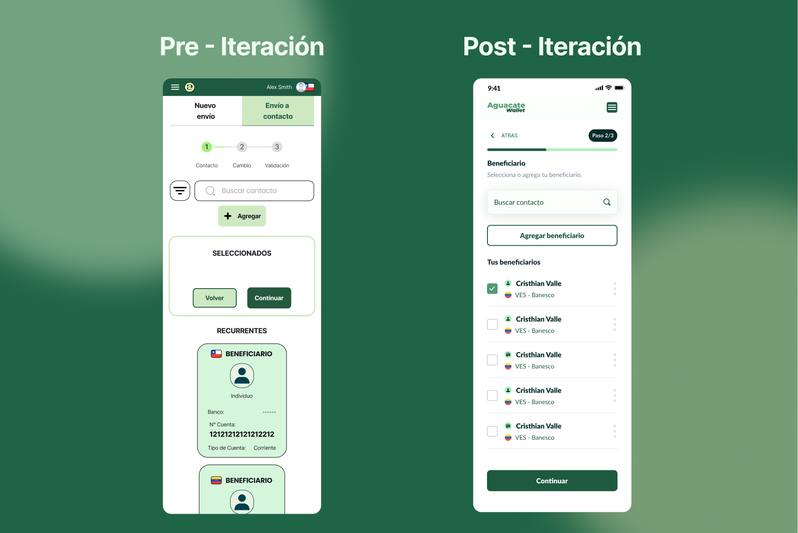
The success screen passed unnoticed.He confirmed that the transaction was created, but lost the opportunity to give peace, proof and next action.
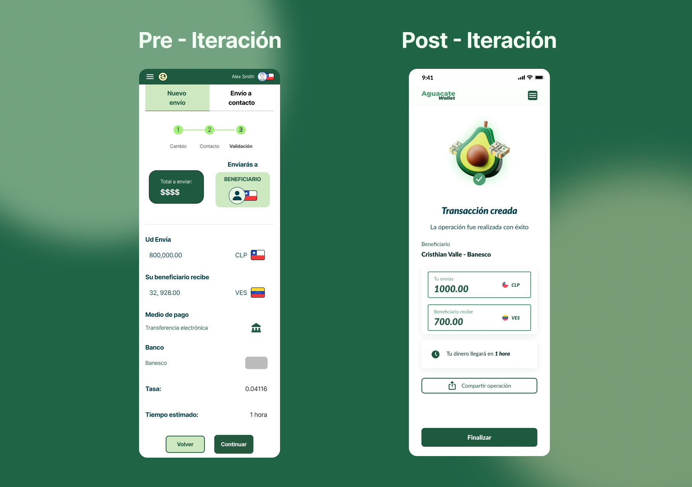
Iteration and recommendations
The trials did not close the process and noted where it should be refined.
From the findings of the test, the report puts forward four main recommendations: to create direct dashboard access for all types of operations, to make components more intuitive depending on the context of the operation, to add additional data from the recipient - such as the bank - and to allow them to share the operation with some contact at the end.
| Test observation | UX problem | Design decision |
| They're looking for a paddle at dashboard. | Main action was not visible | Dashboard as an action centre with quick cards to send, change, criticize and beneficiaries |
| "They merge similar options" | Unclear Hierarchy | Grouping options by task, not by technical functionality |
| "The recipient's card doesn't say enough" | Risk of bad selection | Bank cards, partial number, account type and frequency label |
| "The success screen doesn't leave me with anything" | Unuseful closure | Comportable and complete and following action |
These recommendations can become iteration decisions:
| Finding | Proposed alignment | Expected impact |
| The users found no remittances | Create shortcuts from dashboard | Increased disclosure |
| Confusion with some options | Most intuitive components by context | Decreased cognitive burden |
| Beneficiaries with limited information | Add Bank and Contact Key Data | Increased confidence before sending |
| Unnoticed success screen | Add voucher, share and next action | Better closure of experience |
The most important iteration is at dashboard. If users first look there, experience should respond to that mental model. Instead of hiding core operations in a menu, dashboard should work as an action centre: sending money, retacking, changing currency, managing beneficiaries or revising transactions.
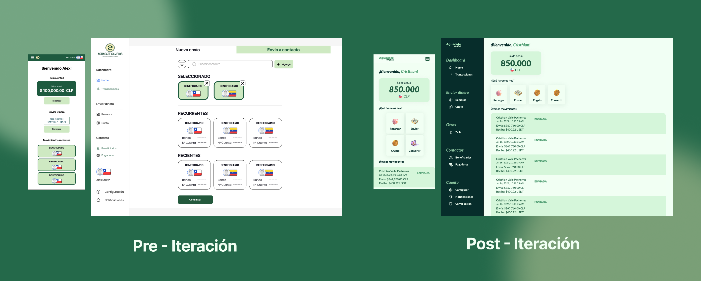
5. IU: materializing confidence
"IU isn't aesthetic. It's visual confidence. "
With the validated flows, I built the first product design system, capable of sustaining that clarity at scale - between app and web platform.
FoundationsTypography with clear hierarchy for amounts, sensitive data and actions.
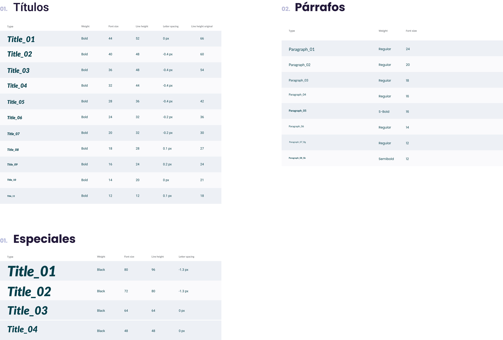
Color: I defined a pallet with green, white and profound tones to strengthen clarity, freshness and confidence. I used the main green for actions, brand and interactive elements, while soft tones worked as a support fund. The pallet thus built a more consistent, clear and recognizable visual experience between app and web platform.
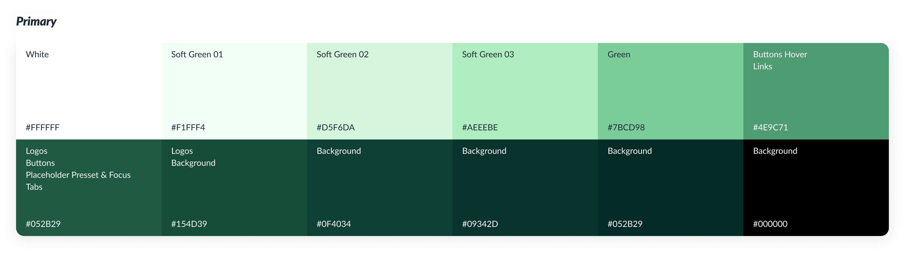
Rebranding: Redesign also incorporated a rebranding: brand passed from Avocado Changeswith an identity more associated with traditional remittances, a Avocado Walletan expression more flexible and aligned with its evolution as a fintech platform. That shift allowed an increased perception of the product: from a solution focused on money and sending, to an integral walk to manage shipments, currency conversion and critical operations from a more modern, simple and reliable experience.
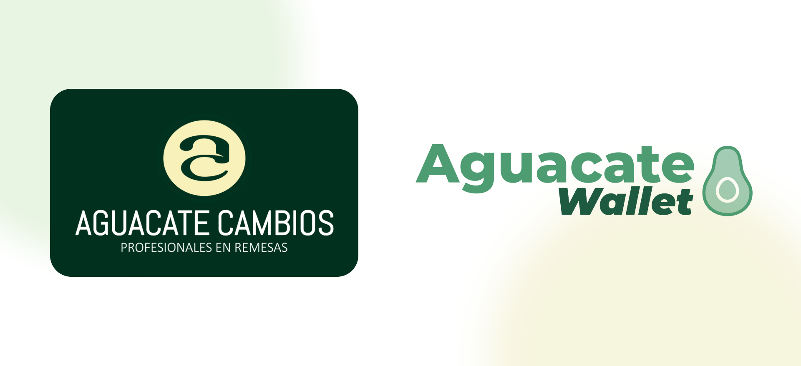
Key components
Final boards (high fidelity)
- New registration and onboard flow.
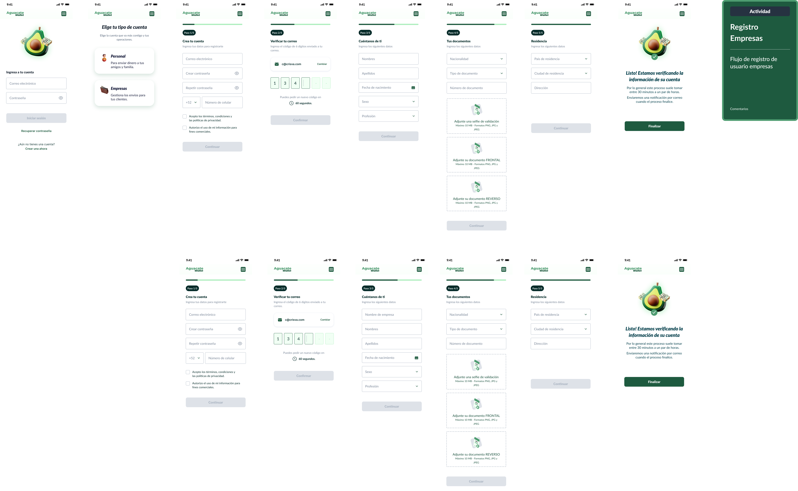
- Home / dashboard as an action centre.
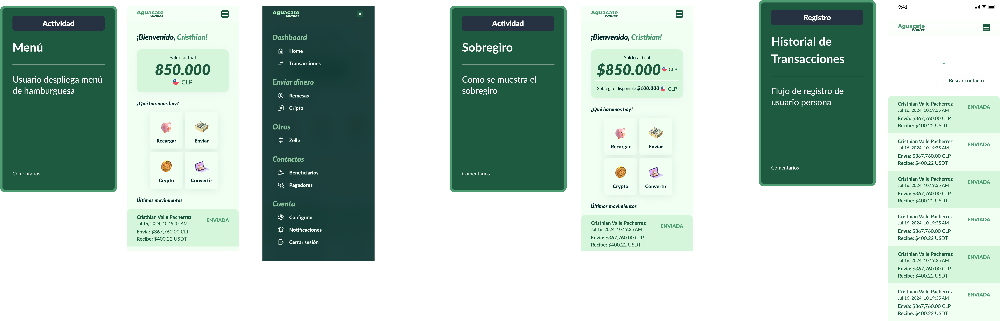
- Flow of consignment
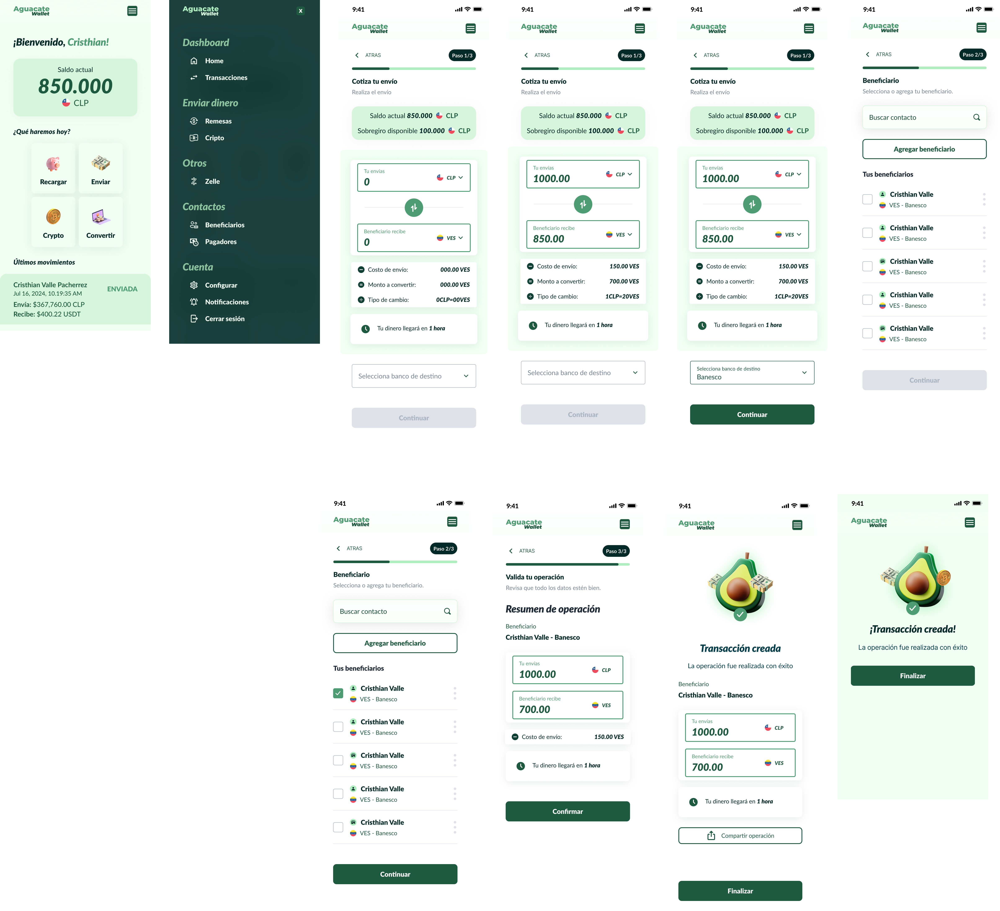
- Retirement Flow
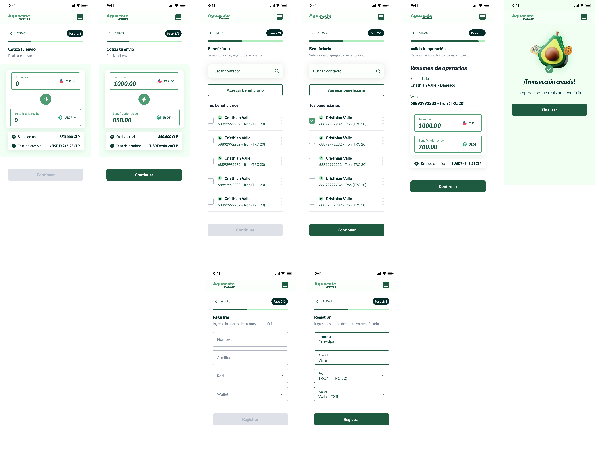
- Currency conversion and crypto operations united in daily language.
6. Impact
Although the project currently does not have after-implementation metrics, redesign allows to project impact on four fronts: conversion, confidence, discovery and scalability.
The opportunity was not only to improve the interface but to make Aguacate feel more clear at a time when users make sensitive decisions: to register, check their identities, quote a consignment, choose recipient and confirm an operation.
| Redesign decision | Expected impact |
| Modular flows with stepper | Further completion and verification |
| Visible critical information before confirming | Decreased transactional uncertainty |
| Dashboard as an action centre | Better disclosure of remittances and key operations |
| Beneficiaries with more context | Increased safety while selecting recipients |
| Summary display as trust checklist | More control before you move money |
| Design system with foundations | Consistency between app and web and scalability for future functions |
Qualitative impact validated at testing
- Registration and verification: includes without friction by 3 participants.
- Retirement: clear as the visual context was present.
- Previous summary: It worked as a monitoring moment and built confidence.
- Dashboard: The most valuable observation of the process - reorganized complete architecture.
7. Learning
To design a walk is to design confidence.
The process gave a central lesson: with financial products, experience cannot be limited to enabling actions. It has to help users understand them, validate them and feel sure before they complete them.
Main Learning:
- UX isn't simplifying screens, it's simplifying decisions.
The user doesn't just have to move forward quickly. He needs to figure out where she's at, what she's up to and what's up after.
- Trust depends on visible information.
Commission, fees, times, beneficiaries and means of payment have to appear before they have been confirmed, but they have been confirmed and have been confirmed.
- The dashboard should be an action centre.
If users are looking for the main operations there, the interface should respond to that mental model.
- Crypto needs translation, not technical complexity.
The critical functions have to be presented from actions that are understandable: sending, receiving, changing or consulting balance.
- The design system also builds confidence.
Visual consistency makes experience more predictable, secure and scalable.
Closure:
Redesigning Avocado Wallet was not just ordering an application.It was to transform a complex financial experience into a more clear, guided and reliable platform.